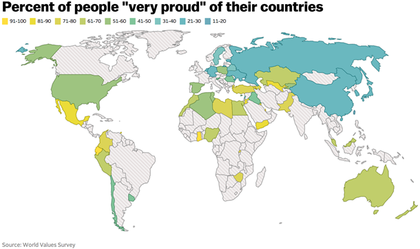
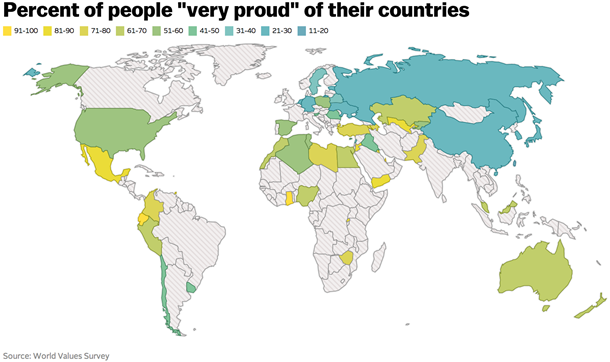

This project is my Master's thesis at the University of Mannheim. I chose to tackle a methodological question: several scientific papers published in the last few years have used deep learning methods to evaluate human attractiveness. However, these papers have not established an important question: Do the methods used generate accurate data and, if not, how can they be improved? To do this, I conducted inference using eight deep learning methods on datasets from four published scientific articles, then replicated the studies in the articles. As the deep learning methods failed to generate accurate data, I then trained two convolutional neural networks of my own and conducted two studies, with marginally better results.
 

In this project, I propose a novel reason why non-response rates in surveys can vary across countries: uncertainty about the socially desirable response. Using beta regression, statistical analysis, and data visualization in R, I show that in countries where no position on socially important topics has become dominant, non-response rates to surveys are higher.

In this project, I used Tableau to map inequality in the United States across six distinct metrics, at both the state and county level. Using the interactive dashboard, you can compare different areas in the United States to each other, or the same place across decades.
This project very seriously attempts to answer a very silly question: if you're in New York City and want to pet a squirrel, where should you go?
Several years ago, a citizen science group conducted a census of all the squirrels in Central Park. Among the variables, they recorded which squirrels voluntarily approached them.
Using SQL and Tableau, I analyze and visualize the data to find the highest density of friendly squirrels.

This is a cluster of projects I've done that all involve some form of A/B testing.